Fall 2025 · Seasonal Focus
Fresh storytelling and exciting sweaters
Clear, compelling, and cohesive storytelling with a strong point
of view on key trends, dynamic elevation pieces, and visual
merchandising. Leverage Quick React to chase incoming trends for
the classic contemporary customer.
- Fresh storytelling · Q3/Q4 point of view
- Customer-favorite evolution · stakes in new trends
-
Vendor co-create · yarn, stitch & technique innovation
Fall 2025 · Big Ideas
Clean and Refined · Fall Dimensional Softness Knit Ideas
Cables
Lofty and soft
Match sets
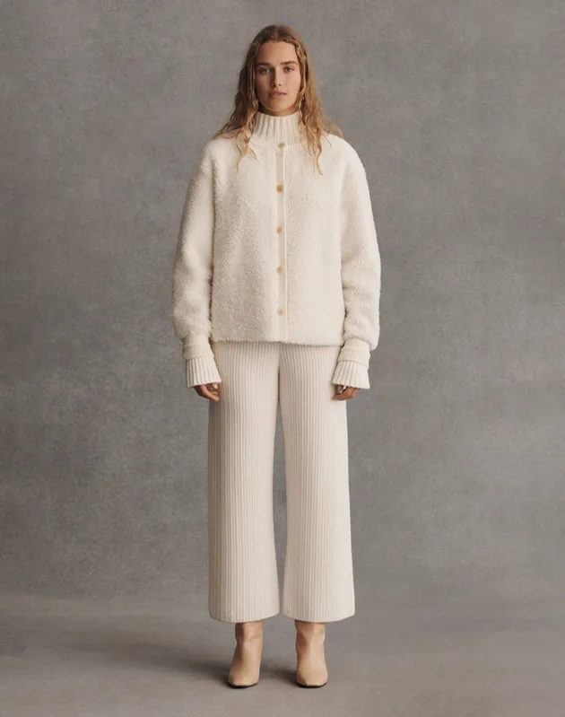
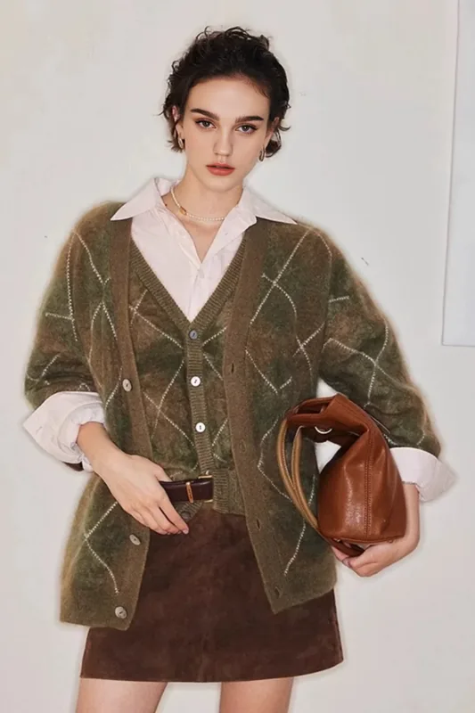
View August board
Holiday 2025 · Big Ideas
High pile · Sparkle · Bold graphics
High pile
Sparkle
Bold graphics
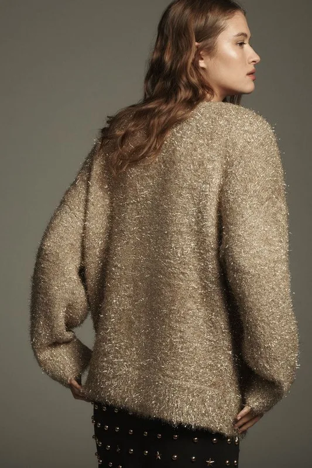
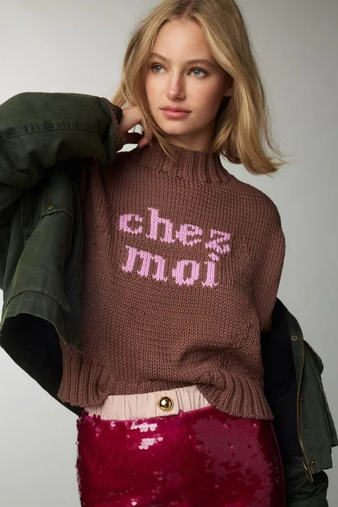
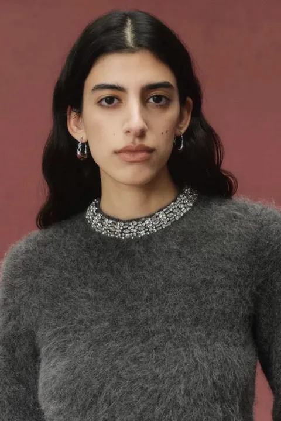
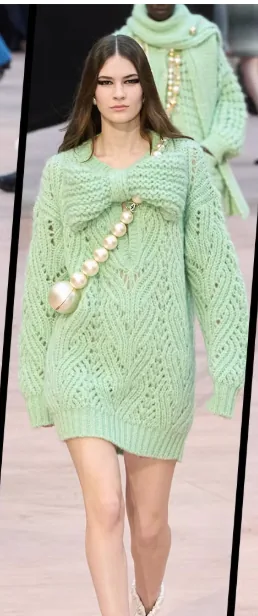
View yarn checklist
Trans 2026 · Big Ideas
Match set · Shrunken cardi · V-Day Graphics
Match set
Shrunken cardi
V-Day Graphics
View checklist
Product Development Archive
Each case study maps creative direction to commercial strategy —
connecting editorial vision, seasonal architecture, and key-item
development to measurable retail outcomes.
Printed Saddle Sleeve Tee
Top-volume-driver program with printed jersey, 12GG body, rib
trims, fit approval, and recycled blend.
Contrast-Trim Saddle Tee
Best-seller execution with full needle collar, clean contrast
trims, and light soft body yarn.
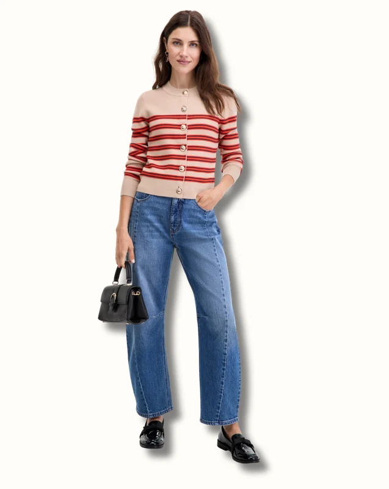
Mix + Match Sweater Set
Birdseye jacquard, tubular trims, doubled rib waist construction,
and shank-button details.
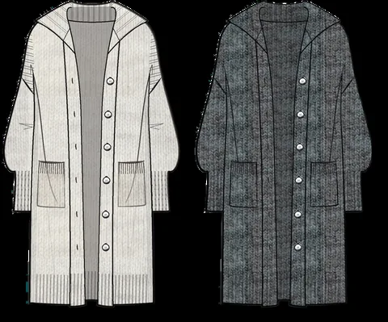
Crew Neck Table Program
5GG jersey and rib side panel execution with 85% STU YTD.
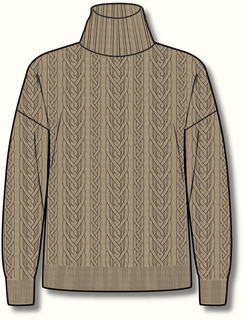
Stripe Polo Sweater
7GG jersey, faux horn button, dream yarn, and 95% STU YTD signal
for a polished key item.
Varsity Tipped V-Neck
Half-cardigan structure and recycled cotton blend translated into
a sporty heritage layer.
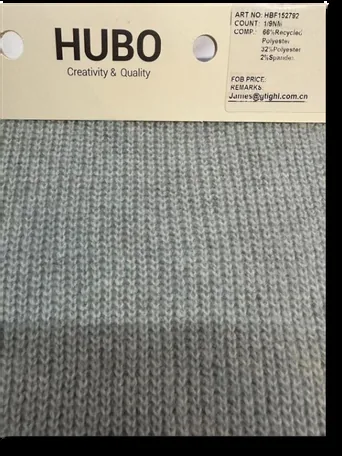
Sweater Bomber & Trouser Set
Matching-set jersey program with dream yarn, fit approval, and 90%
STU YTD performance note.
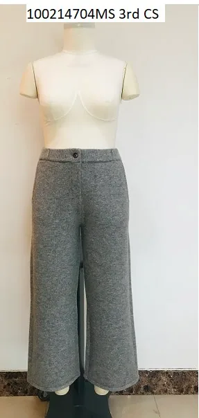
Mix Cable Cardigan
Seed stitch, reverse jersey, cable work, faux horn button, and
five-week best-seller callout.
Lurex Dot Cardigan
Holiday table ladderback jacquard with metallic yarns and
top-volume-driver context.
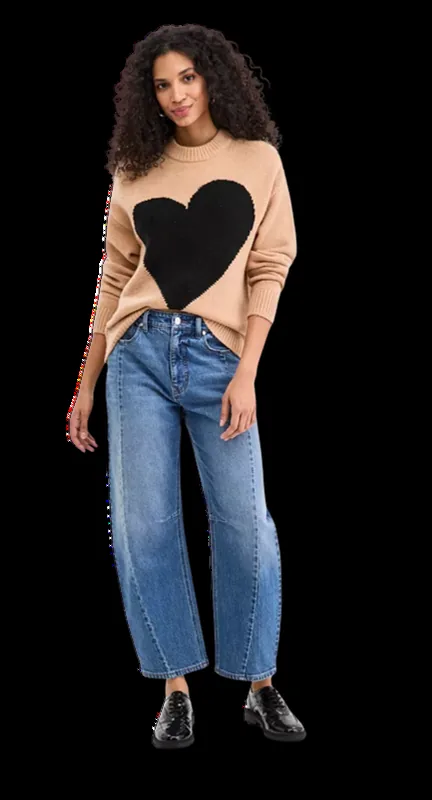
Exploded Heart Sweater
Trans-seasonal intarsia motif with recycled yarn blend and
volume-driver signal.
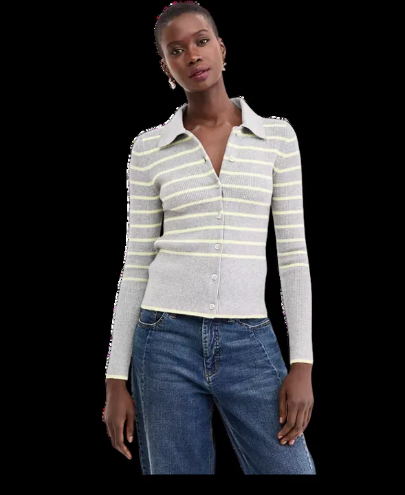
Rib Cardigan + Pencil Skirt
2x2 rib matching set with faux horn button, fit approval, and
four-week best-seller context.
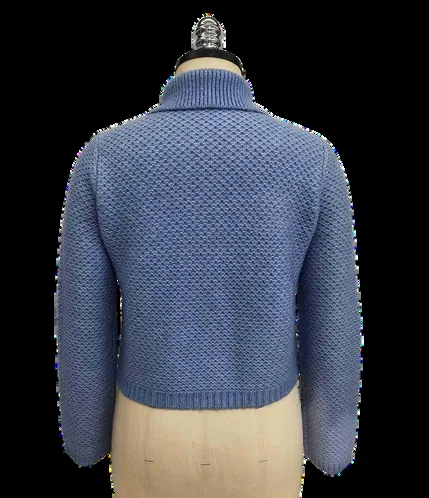
Collared Sweater Jacket
Tuck stitch, tubular collar and pocket finishing, self-covered
buttons, and flat-back rib trims.